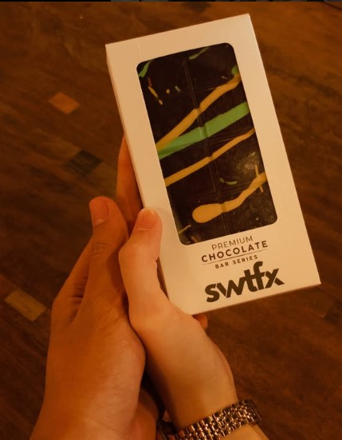
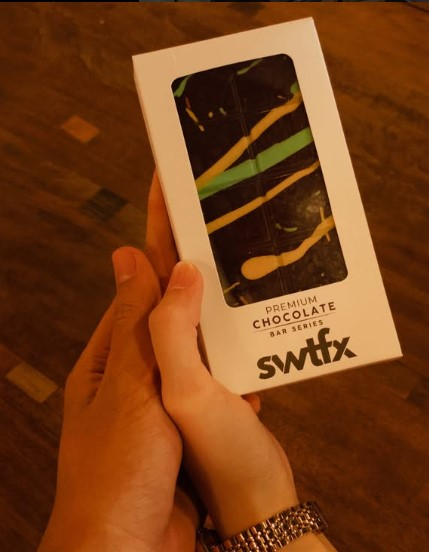
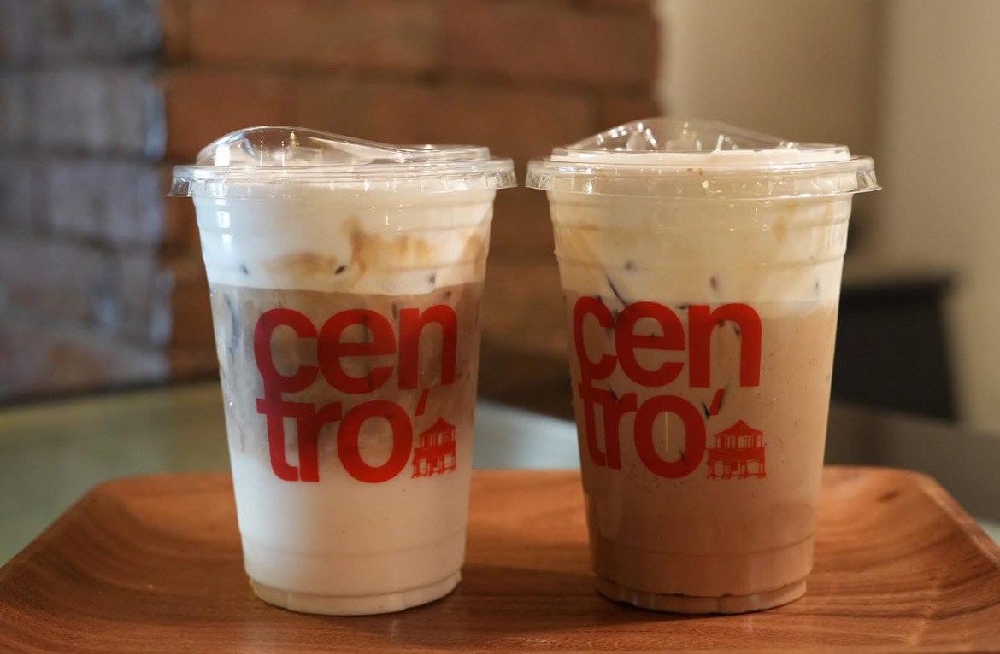

Recent Photos
Here are the captured highlights that define our space, customers, and coffee culture.
 



Our Café Story in Pictures

Recent Videos
Watch our cozy atmosphere and promotions come to life.